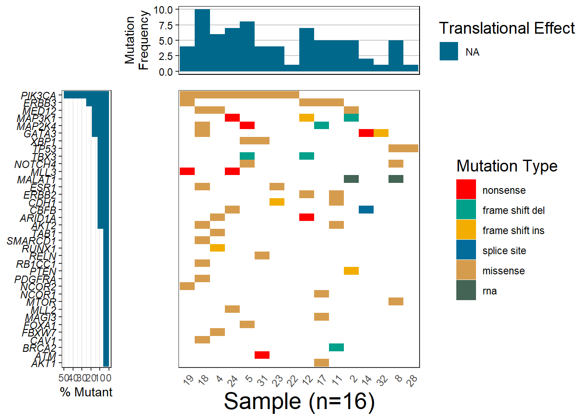

Chapter 2 Portfolio assignment 1.2 Looking ahead
2.1 Portfolio assignment 1.2 Part 1
Looking ahead
Answer the following questions:
Plan to get a paid job in the Netherlands
To do this I need to take the following steps:master the Dutch language, get a basic education.
In my final year of education I plan to do an internship at inspection company NAK ( Randweg 14,Emmeloord). Presumably I will be doing work on detecting infection in potato seeds, using qPCR and data analyse of results.
The current course TLSC-DSFB26V-20 is aimed at obtaining basic bio-medical and bioinformatics knowledge, which I need for your work position.
What would be the next skill to learn
Make a planning on how to start learning this new skill.
Note the following points:
It has to be life sciences or useful for life sciences (no knitting, riding horses etc)
It has to be data science / bioinformatics
You have to show your plan in your portfolio, together with the result of the first few steps you took in trying to reach this goal.
You probably won’t learn this skill in a few days. Just get started.2.2 Portfolio assignment 1.2 Looking ahead. Package GenVisR
Visualizing genetic Mutations with GenVisr
- this is the first approach. The extended analyse follows.

visualization cancerogenic gene PIK3CA
g3Lollipop(mutation.dat,
gene.symbol = mutation_gene_hugo,
protein.change.col = "amino_acid_change",
btn.style = "blue", # blue-style chart download buttons
plot.options = plot.options,
output.filename = "customized_plot")## Factor is set to Mutation_Class
GenVisR is focused on supporting of genomic visualizations. The library waterfall of GenViSR answers the question what mutations are present in the sample. This type plot displays in a heatmap-like structure with rows and columns denotating genes and samples.
The goal is to investigate Bioconductor package GenVisR and to apply it on a clinical dataset. The plan is to conduct deeper research on GenVisR, develop new data analysis techniques, and make contributions to the fields of mutational study in biology and medicine.
Dataset supposed to come from Ensemble database